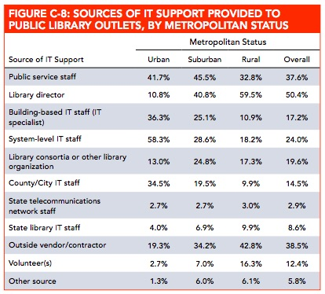
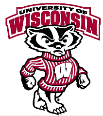
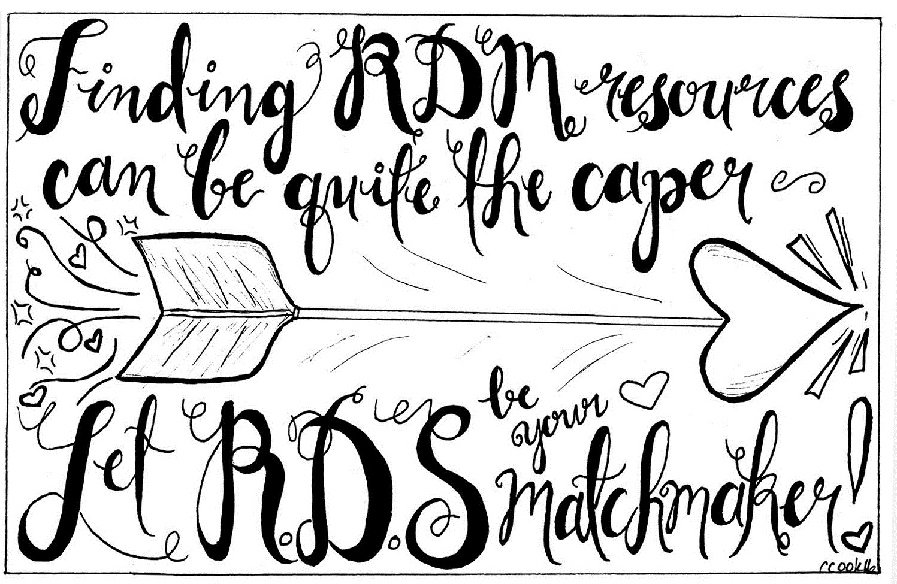
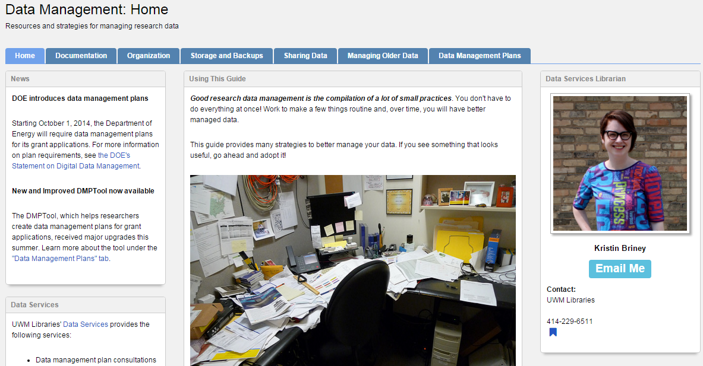
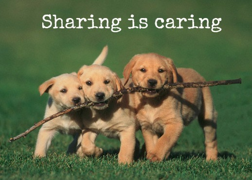
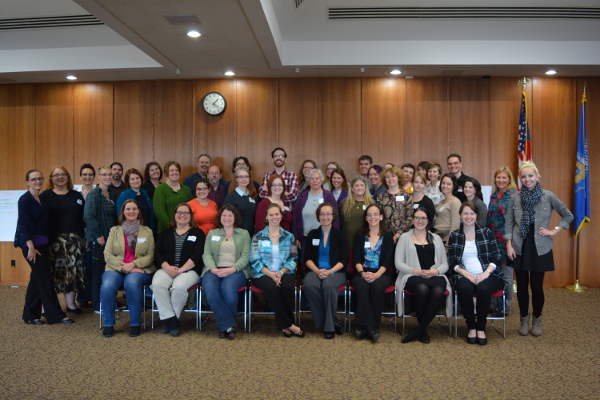

Data, Science, & Librarians,
Oh My!
My thoughts as I navigate the world of data librarianship.
My First LITA
A few weeks ago, I attend the Library Information Technology Association’s Forum. Over the 13-15th, I attended several sessions, explored Minneapolis for the first time, and met some really awesome people. I was, as always, a bit nervous attending a new conference but the organizers had some really great 101-type sessions, and even set up a Slack channel which I found to be immensely helpful throughout the day. People organized dinners, discussed sessions in real-time, posed questions, and uploaded some hysterical gifs.

The first session I attended cemented to me that this conference is 1000% worth attending. Jason Casden talked about the state of open source software in the LIS community and why we are falling short of creating what he called “mature” software. He began this discussion by commending libraryland for creating and publishing a lot of open source software, but there was the big essential caveat: it has to be maintained. This becomes an issue when other institutions want to use your software, but lack prerequisite knowledge--the point is, the software is ECONOMICALLY free to obtain, but requires labour and some prerequisite hardware or software configurations you may not have and may not be free.
He went into some really cool discussion about the open source community in general, of course starting with Richard Stallman and his ideas on developing standardized methods of delivering software and on creating "ideologically free software."
Richard Stallman....you know. Richard Stallman << all that needs to be said about him #litaforum
— Vicky Steeves (@VickySteeves) November 13, 2015
Now of course, Unix systems (Linux!) is widely used and increasingly popular across domains. But the central idea still remains: how can we make open source software more available in Libraryland, especially to underresourced staff?
Jason made an amazing point here: we as a field need to produce more “adult” software. And no, not hentai games, but software that knows what it needs and can correct an environment to allow it to thrive--we must teach software how to create an environment in which it can thrive. Most open source library software, compared to this, is in its child stage.
Again, the open source movement is super important and no disrespect to the developers spending their time creating amazing community resources. But the idea is that our field should spend some time thinking, deliberating, and creating tools that are easier to install, maintain, and evaluate.
2011-2012 ALA Public Library Funding & Technology Access Study
To help, Jason discussed some reasonable task performance metrics that we can apply to our own open source projects. We ideally should meet an 80% threshold of usefulness for software based on these key characteristics, assessed together using the same user group for each one, and using the same success rate for each one:
- can someone install your software on a laptop? how long does it take? over an hour, less than an hour? for what percentage?
- how long does it take to update dependencies?
- time to migrate (how long??)
- time to new production deployment (e.g. if you are funded for 5 years, how long will it take you to deploy it?)
- time to reasonable security (passwords, firewalls, etc)
- time to export data (if relevant)
Another amazing session I attended at LITA was all about "Collaborating to Deliver Better Data Management Services" from Brianna Marshall, the lead in Research Data Services at University of Wisconsin, Madison, and Kristin Briney, the Data Services Librarian at University of Wisconsin, Milwaukee. This session focused on some really cool actionable stuff for me to take home to New York, as Nick and I begin to think on some greater outreach campaigns for the research data management services we provide.
~Go fighting Badgers~
The two started off respectively discussing the environments at their own institutions. At UW-Madison, a research institution that spends about $1.1 billion in research spending, the focus of Research Data Services is mainly education and training, consultations, and support for data management plans. UW-Milwaukee is a Carnegie high research institution ($59mil research spending) with a more demographically diverse population. Their Data Services also include DMP consultations, data management training, and data management consultations.
Brianna went onto describe her initial framework for everything they did in the past year: increasing awareness, and creating buzz so researchers could see them as a valuable service. The first step was to improve the website for Research Data Services: by providing a useful knowledge hub that had an updated aesthetic, they wanted to convey to users that RDS is a useful, active group. The blog attached to this site has amazingly cute RDM-themed graphics, too!!
Additionally, Brianna started a research data management-themed digest as a way for them to both generate content and push users towards the new and improved RDS website. On this shared news, content, and events. These two were bolstered up by the newly created RDS twitter.
Brianna also discussed two in-person meetings they began this past year: a brown bag talk series and a data information literacy reading group. The first was all about finding really awesome researchers and putting the spotlight on them, loosely surrounding their research data management practices and workflows. The idea here was to capitalize on researcher’s social capital to bring people together to talk about research workflows and management.
The data information literacy reading group had about 12 participants so far, a mix of information literacy librarians, subject librarians, graduate students, library IT, and academic IT. The goal was to essentially explore the intersection between research data management and information literacy--and, create some data management evangelists on the way! This group had monthly notes as well as a teaching and learning forum talk.
At UW-Milwaukee, Data Services was really prompted by the 2011 NSF requirement for the inclusion of data management plans with grant applications. Again, the biggest thing at this campus was creating a marketing campaign to get the word out about this new service in the library. Data Services went to faculty meetings, created a partnership with sponsored research, etc. They've put out some sweet videos also like this one below for giving researchers and others some impetus for data managements:
Kristen’s vision was to get people in the room together who rarely met but were stakeholders in how researchers on campus managed their data: records managers, IT, the CIO’s office, the director of networking, a compliance person, senior academic research officer/dean, IRB, and information security. The idea was to create a RDM cohort/network on campus so Data Services (and others!) could provide a research resource list, i.e. “if you have sensitive data, talk to these people” or “if you need storage options, talk to these people.” This created one place for researchers to look instead of having them fumble around asking who does what on campus.
Kristen described her model for Data Services as "playing around in the data sandbox," which I absolutely adored. Their focus is on interdisciplinary programming, trying to train people on skills that cut across all disciplines, so in this spirit they’ve created things like "Data Day!" This was a part of a larger GIS series. They are trying to connect more with digital humanities also by providing support and training on TEI, OpenRefine, and RegEx.
Find resources on their Data Management Guide
What has been a great advantage for Data Services is their ability to try things, see what works, and possibly fail. Because it's a smaller department than the UW-Madison RDS, they have less people to get things done. For Data Services, this wiggle room has been awesome for them as they build new and kind of experimental services around data and data management.
Lastly, Brianna and Kristen went over the cross-campus collaboration that went on between their departments at Madison and Milwaukee. There were some existing infrastructure that helped them think more holistically about the way that they delivered their services. The UW system is completely connection: there is one system across all the UW campuses for library services. They use Primo and Alma, there is a DPLA Wisconsin hub, so why not one data services? They each had some limited local resources and didn’t want to reinvent the wheel, so the idea is that they can use what each other develops!
Sharing is caring!
Perhaps one of the coolest RDM-related things I had ever seen is their one of their joint projects, the Midwest Data Librarians Symposium. Milwaukee hosted and Madison kicked in some money for food and space. They asked a registration fee of $30 for this one day event that centered on all aspects of data librarianship. They had four facilitators who taught in four different sections: teaching data management (focus on lesson planning/curriculum building), curating data, building collaborations, and consulting. What was most exciting was that folks from other states saying they wanted to host it next year!! I really want to do this in New York. The closest thing is The University of Massachusetts and New England Area Librarian e-Science Symposium but I’m wondering if there is an avenue to explore for explicit RDM-type sessions.
Great turnout for the 2015 Symposium! See contents here.
Some future projects for them include providing some liaison librarian training, producing teaching materials for others on RDM, and collecting some cool data that passes through their doors. This involves some more intellectual work, since they have to develop a collection development policy, come up with some metadata recommendations, licensing standards, and think of a role for repository. They also want to formalize these relationships on some state/system level.
They closed the session going over some lessons learned from their past year building collaborations and communication between their two departments at their two campuses. The most salient for me: partnership can work on a partner-by-partner basis because personal relationships matter--most of the time, there is no top-down mandate--you have to go out and do this on your own!
LITA was definitely worth my while and if the program next year is as good as this year, you can bet you’ll find me there again. Plus, amazing crepes:
Everyone at #litaforum needs to go to Bella Crêpe on Nicollet Mall Road, I'm in actual heaven. pic.twitter.com/V0ZNAGStVH
— Vicky Steeves (@VickySteeves) November 13, 2015